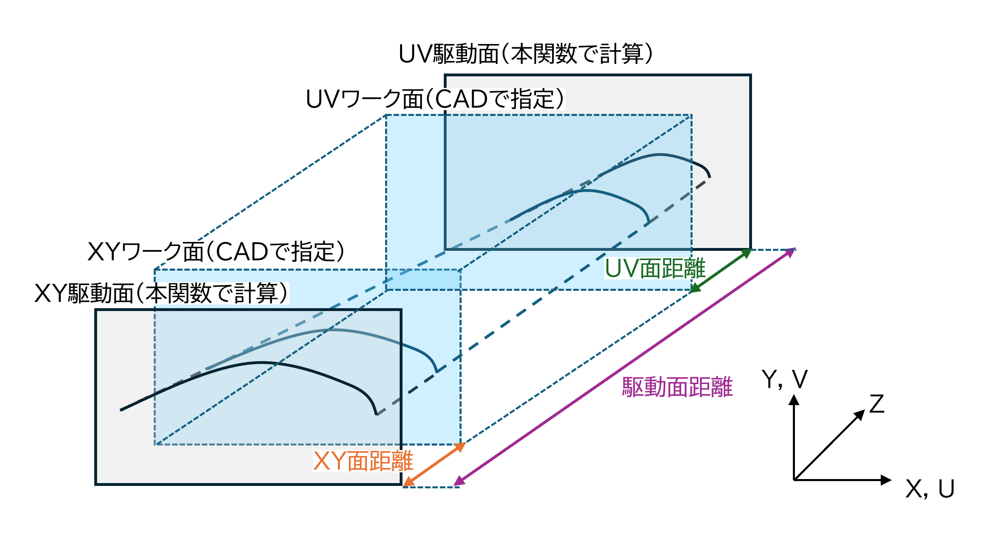

HWCAM module
- class HWCAM.Config
ベースクラス:
objectCAMで使用する設定値を格納するクラス
- FILENAME_XY
デフォルトで読み込むXYのdxfファイル名（起動時にのみ変更）
- Type:
str
- FILENAME_UV
デフォルトで読み込むUVのdxfファイル名（起動時にのみ変更）
- Type:
str
- OX
切り出しの始点座標
- Type:
float
- OY
切り出しの始点座標
- Type:
float
- EX
切り出しの終点座標
- Type:
float
- EY
切り出しの終点座標
- Type:
float
- DELTA_LENGTH
G Codeの点群の間隔
- Type:
float
- XY_OFFSET_DIST
XY座標面のオフセット距離
- Type:
float
- UV_OFFSET_DIST
UV座標面のオフセット距離
- Type:
float
- CUTSPEED
カット速度
- Type:
float
- XY_DIST
XY断面とマシン駆動面との距離
- Type:
float
- UV_DIST
UV断面とマシン駆動面との距離
- Type:
float
- CS_DEF
カット速度定義面
- Type:
str
- CNC_CS_DEF
CNCコントローラーのカット速度定義
- Type:
str
- MACH_DIST
マシン駆動面の距離
- Type:
float
- OFFSET_X
原点X座標
- Type:
float
- OFFSET_Y
原点Y座標
- Type:
float
- ROTATE
回転角度
- Type:
float
- HEADER
Gコードの書き出し文字列
- Type:
str
- X_STR
G01でのX軸名称
- Type:
str
- Y_STR
G01でのY軸名称
- Type:
str
- U_STR
G01でのU軸名称
- Type:
str
- V_STR
G01でのV軸名称
- Type:
str
- REFINE
True:読み込み時にスプラインをリファインする, False:しない
- Type:
bool
- REMOVE_COLLISION
True:自己交差を修正する, False:しない
- Type:
bool
- offset_function
オフセット距離の算出に使用する関数オブジェクト
- Type:
scipy.interpolate.interp1d
- load_config(file_path)
指定されたパスのコンフィギュレーションを読み込む。
file_pathで与えられるcsvファイルを開き、csvファイルから読み込んだ値をメンバ変数に設定する。問題があればデフォルト値を設定する
- パラメータ:
file_path(str)--コンフィギュレーションを記述したcsvファイルのパス
- load_offset_func(file_path)
指定されたパスのオフセット関数を読み込む
file_pathで与えられるcsvファイルを開き、csvファイルから読み込んだ値からoffset_functionを更新する。問題があればデフォルト値を設定する
- パラメータ:
file_path(str)--オフセット関数を記述したcsvファイルのパス
- HWCAM.auto_sort_line(dxf_obj, x_dxf_obj, is_xy_uv_link, name, x_name, messeage_window)
テーブルで選択した線を起点として、テーブル内の線を一筆書きとなるように並び替える
- パラメータ:
dxf_obj(DxfFile)--自身のDxfFileクラス
x_dxf_obj(DxfFile)--相手のDxfFileクラス
is_xy_uv_link(bool)--True:XYテーブルをUVテーブルと同期する, False:しない
name(str)--自身のテーブルの名称
x_name(str)--相手のテーブルの名称
messeage_window(MesseageWindow)--メッセージウィンドウ
注釈
is_xy_uv_link=Trueの場合、相手のテーブルに対しても同様の操作を実施する。
並び替え中に発生した例外は、標準出力へ表示した上で、output_logによりエラーファイルにも出力する。
- HWCAM.change_cut_dir(dxf_obj, x_dxf_obj, is_xy_uv_link, name, x_name, messeage_window)
テーブルで選択されている線のカット方向を入れ替え、結果を通知する
- パラメータ:
dxf_obj(DxfFile)--自身のDxfFileクラス
x_dxf_obj(DxfFile)--相手のDxfFileクラス
is_xy_uv_link(bool)--True:XYテーブルをUVテーブルと同期する, False:しない
name(str)--自身のテーブルの名称
x_name(str)--相手のテーブルの名称
messeage_window(MesseageWindow)--メッセージウィンドウ
注釈
is_xy_uv_link=Trueの場合、相手のテーブルに対しても同様の操作を実施する。
- HWCAM.delete_line(dxf_obj, x_dxf_obj, is_xy_uv_link, is_remove_collision, name, x_name, messeage_window)
テーブルで選択した線を削除する
- パラメータ:
dxf_obj(DxfFile)--自身のDxfFileクラス
x_dxf_obj(DxfFile)--相手のDxfFileクラス
is_xy_uv_link(bool)--True:XYテーブルをUVテーブルと同期する, False:しない
is_remove_collision(bool)--True:自己交差を除去する, False:しない
name(str)--自身のテーブルの名称
x_name(str)--相手のテーブルの名称
messeage_window(MesseageWindow)--メッセージウィンドウ
注釈
is_xy_uv_link=Trueの場合、相手のテーブルに対しても同様の操作を実施する。
is_remove_collision=Trueの場合、削除後の線に対して、自己交差を除去する。
- HWCAM.enable_3d_path_check(is_3d_path_check, messeage_window)
パスチェックの設定変更を通知する
- パラメータ:
is_3d_path_check(bool)--True:3Dでパスチェックする, False:2Dでパスチェックする
messeage_window(MesseageWindow)--メッセージウィンドウ
- HWCAM.enable_remove_self_collision(is_remove_collision, messeage_window)
自己交差除去の設定変更を通知する
- パラメータ:
is_remove_collision(bool)--True:自己交差を除去する, False:しない
messeage_window(MesseageWindow)--メッセージウィンドウ
- HWCAM.enable_spline_refine(is_spline_refine, messeage_window)
リファインの設定変更を通知する
- パラメータ:
is_spline_refine(bool)--True:スプライン点列をリファインして読み込む, False:リファインしない
messeage_window(MesseageWindow)--メッセージウィンドウ
- HWCAM.gen_g_code(dxf_obj0, dxf_obj1, entry_ox, entry_oy, entry_ex, entry_ey, xy_dist_entry, uv_dist_entry, mach_dist_entry, cut_speed_entry, cut_speed_def_cb, cb_CncCSDef, entry_dl, messeage_window, config)
XY-UVテーブルで指定したカットパスに従い、Gコードを生成する
- パラメータ:
dxf_obj0(DxfFile)--XY断面のDxfFileクラス
dxf_obj1(DxfFile)--UV断面のDxfFileクラス
entry_ox(tkinter.Entry)--切り出し始点(X座標)を入力するエントリー
entry_oy(tkinter.Entry)--切り出し始点(Y座標)を入力するエントリー
entry_ex(tkinter.Entry)--切り出し終点(X座標)を入力するエントリー
entry_ey(tkinter.Entry)--切り出し終点(Y座標)を入力するエントリー
xy_dist_entry(tkinter.Entry)--XY面距離を入力するエントリー
uv_dist_entry(tkinter.Entry)--UV面距離を入力するエントリー
mach_dist_entry(tkinter.Entry)--駆動面距離を入力するエントリー
cut_speed_entry(tkinter.Entry)--カット速度を入力するエントリー
cut_speed_def_cb(tkinter.Combobox)--カット速度定義面のコンボボックス
cb_CncCSDef(tkinter.Combobox)--CNC速度定義のコンボボックス
entry_dl(tkinter.Entry)--分割距離を入力するエントリー
messeage_window(MesseageWindow)--メッセージウィンドウ
config(Config)--CAMで使用する設定値を格納するクラス
- HWCAM.get_cutspeed(length_xy, length_uv, z_xy, z_uv, z_mach, cut_speed, cut_speed_def_value)
同時に加工するXY-UV断面の2本の線について、ワーク端／駆動面でのカット速度を計算する
- パラメータ:
length_xy(float)--XY断面の線の長さ
length_uv(float)--UV断面の線の長さ
z_xy(float)--XY面距離
z_uv(float)--UV面距離
z_mach(float)--駆動面距離
cut_speed(float)--カット速度
cut_speed_def_value(str)--カット速度定義面
- Returns:
float-- XY面側のCNC駆動面でのカット速度
float-- XYワーク端でのカット速度
float-- ワーク中央でのカット速度
float-- UVワーク端でのカット速度
float-- UV面側のCNC駆動面でのカット速度
- HWCAM.load_config(config, config_entry, dl_entry, xy_offset_entry, uv_offset_entry, cut_speed_entry, cut_speed_def_cb, cnc_speed_def_cb, xy_dist_entry, uv_dist_entry, mach_dist_entry, message_window)
エクスプローラーを用いて設定ファイルを読み込み、各種エントリーを更新する
open_file_explorerを用いて、config_entryにconfigファイルのパスを設定する。
configクラスのload_configメソッドを使用して、configファイルのパスを読みこみ、configオブジェクトの値を更新する。
各エントリーの値を、configオブジェクトの値に更新する。
MessageWindowにconfig.load_configの結果およびGコードの書き出しを出力する。
- パラメータ:
config(Config)--CAMで使用する設定値を格納するクラス
config_entry(tkinter.Entry)--設定ファイルのパスを入力するエントリー
dl_entry(tkinter.Entry)--分割距離を入力するエントリー
xy_offset_entry(tkinter.Entry)--XY面のオフセット距離を入力するエントリー
uv_offset_entry(tkinter.Entry)--UV面のオフセット距離を入力するエントリー
cut_speed_entry(tkinter.Entry)--カット速度を入力するエントリー
cut_speed_def_cb(tkinter.Combobox)--カット速度定義面のコンボボックス
cnc_speed_def_cb(tkinter.Combobox)--CNC速度定義のコンボボックス
xy_dist_entry(tkinter.Entry)--XY面距離を入力するエントリー
uv_dist_entry(tkinter.Entry)--UV面距離を入力するエントリー
mach_dist_entry(tkinter.Entry)--駆動面距離を入力するエントリー
message_window(MesseageWindow)--メッセージウィンドウ
- HWCAM.load_file(dxf_obj, entry, is_spline_refine, messeage_window)
dxfファイルをDxfFileクラスに設定する
- パラメータ:
dxf_obj(DxfFile)--dxfファイルを設定するDxfFileクラス
entry(tkinter.Entry)--dxfファイルのパスを入力するエントリー
is_spline_refine(bool)--True: スプライン点列をリファインして読み込む, False:リファインしない
messeage_window(MesseageWindow)--メッセージウィンドウ
- HWCAM.load_offset_func(config, offset_func_entry, message_window)
エクスプローラーを用いて溶け量ファイルを読み込む
open_file_explorerを用いて、offset_func_entryに溶け量ファイルのパスを設定する。
configクラスのload_offset_funcメソッドを使用して、溶け量ファイルのパスを読みこみ、configオブジェクトのoffset_functionのメンバーを更新する。
MessageWindowにconfig.load_offset_funcの結果を出力する。
- パラメータ:
config(Config)--CAMで使用する設定値を格納するクラス
offset_func_entry(tkinter.Entry)--溶け量ファイルのパスを入力するエントリー
message_window(MesseageWindow)--メッセージウィンドウ
- HWCAM.make_offset_path(x_array, y_array, u_array, v_array, z_xy, z_uv, z_mach)
CNCの駆動面における座標点列を生成する

- パラメータ:
x_array(numpy.array)--x座標点列(XY断面)
y_array(numpy.array)--y座標点列(XY断面)
u_array(numpy.array)--u座標点列(UV断面)
v_array(numpy.array)--v座標点列(UV断面)
z_xy(float)--XY面距離
z_uv(float)--UV面距離
z_mach(float)--駆動面距離
- Returns:
numpy.array-- XY面側のCNC駆動面におけるx座標点列
numpy.array-- XY面側のCNC駆動面におけるy座標点列
numpy.array-- UV面側のCNC駆動面におけるu座標点列
numpy.array-- UV面側のCNC駆動面におけるv座標点列
- HWCAM.merge_line(dxf_obj, x_dxf_obj, is_xy_uv_link, is_remove_collision, name, x_name, messeage_window)
テーブル内で選択した線を結合する
- パラメータ:
dxf_obj(DxfFile)--自身のDxfFileクラス
x_dxf_obj(DxfFile)--相手のDxfFileクラス
is_xy_uv_link(bool)--True:XYテーブルをUVテーブルと同期する, False:しない
is_remove_collision(bool)--True:自己交差を除去する, False:しない
name(str)--自身のテーブルの名称
x_name(str)--相手のテーブルの名称
messeage_window(MesseageWindow)--メッセージウィンドウ
注釈
is_xy_uv_link=Trueの場合、相手のテーブルに対しても同様の操作を実施する。
is_remove_collision=Trueの場合、結合後の線に対して、自己交差を除去する。
- HWCAM.offset_origin(dxf_obj0, dxf_obj1, entry_offset_ox, entry_offset_oy, messeage_window)
指定の距離だけ、XYおよびUV断面の原点をオフセットする。
- パラメータ:
dxf_obj0(DxfFile)--XY断面のDxfFileクラス
dxf_obj1(DxfFile)--UV断面のDxfFileクラス
entry_offset_ox(tkinter.Entry)--原点のX方向オフセット量の入力エントリー
entry_offset_oy(tkinter.Entry)--原点のY方向オフセット量の入力エントリー
message_window(MesseageWindow)--メッセージウィンドウ
注釈
XY,UV断面にCADファイルを読み込み後にのみ、オフセット可能。
エントリーの値が実数値でない場合は、例外を発生させ、標準出力へ表示した上で、output_logによりエラーファイルにも出力する。
- HWCAM.open_dxf_explorer(dxf_obj, entry, is_spline_refine, messeage_window)
エクスプローラーを用いてdxfファイルを読み込む
open_file_explorerを用いて、dxfファイルのパスを取得し、エントリーへ設定する。
load_fileにdxfファイルのパスを渡し、DxfFileオブジェクトを更新する。
- パラメータ:
dxf_obj(DxfFile)--dxfファイルを設定するDxfFileクラス
entry(tkinter.Entry)--dxfファイルのパスを入力するエントリー
is_spline_refine(bool)--True: スプライン点列をリファインして読み込む, False:リファインしない
messeage_window(MesseageWindow)--メッセージウィンドウ
- HWCAM.open_file_explorer(entry)
エクスプローラーからファイルパスを取得し、entryに挿入する
- パラメータ:
entry(tkinter.Entry)--ファイルパスを入力するエントリー
- HWCAM.path_chk(Root, dxf_obj0, dxf_obj1, entry_ox, entry_oy, entry_ex, entry_ey, xy_dist_entry, uv_dist_entry, mach_dist_entry, entry_dl, use3dValue, messeage_window)
カットパスを3Dまたは2Dとしてプロットする。
3Dの場合は、始点から終点までのカットパスをアニメーションでプロットする。
- パラメータ:
Root(tkinter.Tk)--メインウィンドウの枠となるインスタンス
dxf_obj0(DxfFile)--XY断面のDxfFileクラス
dxf_obj1(DxfFile)--UV断面のDxfFileクラス
entry_ox(tkinter.Entry)--切り出し始点(X座標)を入力するエントリー
entry_oy(tkinter.Entry)--切り出し始点(Y座標)を入力するエントリー
entry_ex(tkinter.Entry)--切り出し終点(X座標)を入力するエントリー
entry_ey(tkinter.Entry)--切り出し終点(Y座標)を入力するエントリー
xy_dist_entry(tkinter.Entry)--XY面距離を入力するエントリー
uv_dist_entry(tkinter.Entry)--UV面距離を入力するエントリー
mach_dist_entry(tkinter.Entry)--駆動面距離を入力するエントリー
entry_dl(tkinter.Entry)--分割距離を入力するエントリー
use3dValue(bool)--True;3Dでパスチェックする, False:2Dでパスチェックする
messeage_window(MesseageWindow)--メッセージウィンドウ
- HWCAM.remove_collision(dxf_obj, name, messeage_window)
dxf_objに含まれる線について、自己交差を除去する
- パラメータ:
dxf_obj(DxfFile)--DxfFileクラス
name(str)--テーブルの名称
messeage_window(MesseageWindow)--メッセージウィンドウ
注釈
自己交差を除去では、線内の自己交差と、線同士の交差の２種類を除去する
- HWCAM.replace_g_code(g_code_str, x_str, y_str, u_str, v_str)
Gコード内の軸名称を指定のものに置き換える
CAMでの軸名称
対応する軸名称
備考
X
x_str
X-Y平面のX軸
Y
y_str
X-Y平面のY軸
U
u_str
U-V平面のU軸
V
v_str
U-V平面のV軸
- パラメータ:
g_code_str(str)--Gコード命令の文字列
x_str(str)--CAMのX軸名称
y_str(str)--CAMのY軸名称
u_str(str)--CAMのU軸名称
v_str(str)--CAMのV軸名称
- Returns:
str-- 置換後のGコード命令の文字列
- HWCAM.reverse_line(dxf_obj, x_dxf_obj, is_xy_uv_link, name, x_name, messeage_window)
選択した画面のカット方向をすべて反転させる
- パラメータ:
dxf_obj(DxfFile)--自身のDxfFileクラス
x_dxf_obj(DxfFile)--相手のDxfFileクラス
is_xy_uv_link(bool)--True:XYテーブルをUVテーブルと同期する, False:しない
name(str)--自身のテーブルの名称
x_name(str)--相手のテーブルの名称
messeage_window(MesseageWindow)--メッセージウィンドウ
注釈
is_xy_uv_link=Trueの場合、相手のテーブルに対しても同様の操作を実施する。
- HWCAM.rotate_origin(dxf_obj0, dxf_obj1, rotate_entry, messeage_window)
指定の角度だけ、XYおよびUV断面を回転する。
- パラメータ:
dxf_obj0(DxfFile)--XY断面のDxfFileクラス
dxf_obj1(DxfFile)--UV断面のDxfFileクラス
rotate_entry(tkinter.Entry)--回転角度を入力するエントリー
message_window(MesseageWindow)--メッセージウィンドウ
注釈
XY,UV断面にCADファイルを読み込み後にのみ、回転可能。
回転中心は、それぞれの断面の重心の平均値の座標とする。
エントリーの値が実数値でない場合は、例外を発生させ、標準出力へ表示した上で、output_logによりエラーファイルにも出力する。
- HWCAM.separate_line(dxf_obj, is_remove_collision, name, messeage_window)
テーブルで選択した線を、グラフで選択した分割点で分割する
- パラメータ:
dxf_obj(DxfFile)--DxfFileクラス
is_remove_collision(bool)--True:自己交差を除去する, False:しない
name(str)--テーブルの名称
messeage_window(MesseageWindow)--メッセージウィンドウ
注釈
is_remove_collision=Trueの場合、分割後の線に対して、自己交差を除去する。
- HWCAM.set_cut_speed(dxf_obj0, dxf_obj1, xy_dist_entry, uv_dist_entry, mach_dist_entry, cut_speed_entry, cut_speed_def_cb)
XYテーブルおよびUVテーブルの線のカット速度を設定する
上下異形状の場合は、対応する線の長さの比と、カット速度を定義する断面からカット速度を設定する。
- パラメータ:
dxf_obj0(DxfFile)--XY断面のDxfFileクラス
dxf_obj1(DxfFile)--UV断面のDxfFileクラス
xy_dist_entry(tkinter.Entry)--XY面距離を入力するエントリー
uv_dist_entry(tkinter.Entry)--UV面距離を入力するエントリー
mach_dist_entry(tkinter.Entry)--駆動面距離を入力するエントリー
cut_speed_entry(tkinter.Entry)--カット速度を入力するエントリー
cut_speed_def_cb(tkinter.Combobox)--カット速度定義面のコンボボックス
注釈
上下異形状で線の本数が不一致の場合は、カット速度をそのまま各線のカット速度に設定する。
エントリーの値が実数値でない場合は、例外を発生させ、標準出力へ表示した上で、output_logによりエラーファイルにも出力する。
- HWCAM.set_offset_dist(dxf_obj, entry, x_dxf_obj, x_entry, is_xy_uv_link, is_remove_collision, name, x_name, messeage_window)
オフセット距離を設定する
- パラメータ:
dxf_obj(DxfFile)--自身のDxfFileクラス
entry(tkinter.Entry)--自身のオフセット距離の入力エントリー
x_dxf_obj(DxfFile)--相手のDxfFileクラス
x_entry(tkinter.Entry)--相手のオフセット距離の入力エントリー
is_xy_uv_link(bool)--True:XYテーブルをUVテーブルと同期する, False:しない
is_remove_collision(bool)--True:自己交差を除去する, False:しない
name(str)--自身のテーブルの名称
x_name(str)--相手のテーブルの名称
messeage_window(MesseageWindow)--メッセージウィンドウ
注釈
is_xy_uv_link=Trueの場合、相手のテーブルに対しても同様の操作を実施する。
is_remove_collision=Trueの場合、オフセット後の線に対して、自己交差を除去する。
オフセット距離が実数値でない場合は、例外を発生させ、標準出力へ表示した上で、output_logによりエラーファイルにも出力する。
- HWCAM.set_offset_dist_from_function(dxf_obj0, dxf_obj1, xy_dist_entry, uv_dist_entry, mach_dist_entry, cut_speed_entry, cut_speed_def_cb, offset_function, is_remove_collision, messeage_window)
ワーク端でのカット速度から、溶け量ファイルを用いてオフセット距離を設定する
- パラメータ:
dxf_obj0(DxfFile)--XY断面のDxfFileクラス
dxf_obj1(DxfFile)--UV断面のDxfFileクラス
xy_dist_entry(tkinter.Entry)--XY面距離を入力するエントリー
uv_dist_entry(tkinter.Entry)--UV面距離を入力するエントリー
mach_dist_entry(tkinter.Entry)--駆動面距離を入力するエントリー
cut_speed_entry(tkinter.Entry)--カット速度を入力するエントリー
cut_speed_def_cb(tkinter.Combobox)--カット速度定義面のコンボボックス
offset_function(scipy.interpolate.interp1d)--オフセット距離の算出に使用する関数オブジェクト
is_remove_collision(bool)--True:自己交差を修正する, False:しない
message_window(MesseageWindow)--メッセージウィンドウ
注釈
is_remove_collision=Trueの場合、結合後の線に対して、自己交差を除去する。
エントリーの値が実数値でない場合は、例外を発生させ、標準出力へ表示した上で、output_logによりエラーファイルにも出力する。
- HWCAM.xy_uv_link(is_xy_uv_link, xy_table, uv_table, messeage_window)
XYとUV画面を連動するように設定し、設定変更を通知する
- パラメータ:
is_xy_uv_link(bool)--True:XYテーブルをUVテーブルと同期する, False:しない
xy_table(SuperTable)--XYテーブル
uv_table(SuperTable)--UVテーブル
messeage_window(MesseageWindow)--メッセージウィンドウ